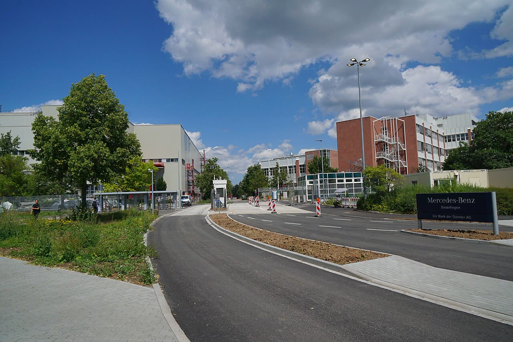

Mercedes congela gli investimenti in Germania e valuta chiusure
Mercedes indica il costo del lavoro, non l'energia né il 2035: è una mossa nella trattativa con il sindacato, e il costo orario da solo non basta a giustificarla.
Redazione Contrappunto · aggiornato il 13.11.2026


Il 12 novembre 2026 Mercedes-Benz, la casa automobilistica di Stoccarda, ha detto ai dipendenti in un'intervista sulla intranet aziendale (la rete interna, non pubblica) che il consiglio di gestione ha deciso di fermare per ora tutti gli investimenti negli stabilimenti tedeschi e che sta valutando in concreto quali stabilimenti in Germania può ancora permettersi. Le parole sono del responsabile della produzione Michael Schiebe e della responsabile del personale Britta Seeger. Il gruppo ha confermato il contenuto ai media (Heise); l'intervista non è pubblica ed è stata vista da AFP, dpa e Handelsblatt.
Vedi di più: 3 parole spiegate, cosa si racconta
Cosa si raccontaLe testate lette raccontano la stessa cosa: Mercedes ferma gli investimenti perché la trattativa sui costi con il consiglio di fabbrica e IG Metall è bloccata (DW, Euronews). Sullo sfondo, vendite in calo in Cina, concorrenza delle elettriche cinesi, dazi americani. Per Handelsblatt con l'intervista l'azienda «alza la pressione» sul fronte dei lavoratori. Al centro c'è la richiesta di lavorare di più a parità di stipendio: secondo FAZ e WirtschaftsWoche, citate dalla Berliner Zeitung, da 35 a 40 ore a settimana. Il sindacato IG Metall e il consiglio di fabbrica rifiutano e danno la colpa a scelte sbagliate dell'azienda (comunicato IG Metall, 3 luglio 2026). [Deutsche Welle] [Euronews] [Handelsblatt] [Berliner Zeitung] [Heise Online] [IG Metall]
- Consiglio di fabbrica (Betriebsrat)
- In Germania i rappresentanti eletti dei dipendenti di un'azienda, che per legge devono essere consultati su molte decisioni; qui li guida Ergun Lümali (comunicato IG Metall).
- IG Metall
- Il sindacato dei metalmeccanici tedeschi, che con le associazioni delle imprese firma i contratti di categoria, tra cui la settimana di 35 ore (Heise).
- Powertrain
- Gli stabilimenti che producono i componenti del motore e della trasmissione, a differenza di quelli di montaggio (Berliner Zeitung).
- Mercedes-Benz ha fermato per ora tutti gli investimenti negli stabilimenti tedeschi e valuta chiusure: lo ha deciso il consiglio di gestione, dice Schiebe nell'intervista interna del 12 novembre (DW, Handelsblatt).
- Per Mercedes un'ora di lavoro in Germania costa a volte fino a cinque volte quella dell'Europa dell'Est, ma l'azienda non ha dato la scomposizione e Heise osserva che il dato non si può controllare (Heise, Berliner Zeitung).
- Per l'Italia: la Germania è il primo mercato della componentistica auto italiana (circa 4 miliardi di export nel 2020, quasi 5 nel 2025 secondo Anfia), ma nessuna fonte letta dice cosa cambia per i fornitori di Mercedes (Il Post, Sicurauto).
Tutte le testate lette, da DW a Euronews, da Handelsblatt alla Berliner Zeitung e a Heise, vedono lo stesso nodo: dopo mesi senza accordo, Mercedes alza la pressione su sindacato e consiglio di fabbrica, che rifiutano le 40 ore senza aumento. Nelle dichiarazioni lette Mercedes non cita né l'energia né lo stop ai motori termici del 2035: leggere il caso come prova del loro peso, o di una deindustrializzazione europea, i fatti non lo reggono. Il nostro punto: chi non investe dove costa troppo fa ciò che fa il mercato, e lo Stato non deve pagarlo per restare. Ma Mercedes non ha mostrato i conti, e il costo orario da solo dice poco. [1] [2] [3] [4] [5]
La verifica punto per punto3 passaggi, 8 fonti
Qui sotto ogni cosa scritta sopra, una per una, con le fonti. Confermato: lo dice un documento originale o più fonti lette. Plausibile: lo riportano fonti serie, ma non abbiamo letto l'originale. Discordante: le fonti danno numeri diversi, e diciamo quali. Ipotesi e Opinione sono il nostro ragionamento, separato dai fatti.
Cosa ha detto Mercedes
Il 12 novembre 2026 un'intervista interna di Mercedes-Benz ha annunciato lo stop a ogni ulteriore investimento negli stabilimenti tedeschi, per ora. Schiebe dice che con i costi attuali non conviene investire in Germania; Seeger che bisogna valutare quali stabilimenti il gruppo può ancora permettersi e che le chiusure, da evitare, vanno ora considerate più da vicino. Mercedes ha già parlato di due stabilimenti a rischio, uno di montaggio e uno di componenti, senza dire quali (Berliner Zeitung, Heise). Heise: se i costi non scendono, i prodotti successivi saranno fatti solo all'estero. Per l'azienda un'ora di lavoro in Germania costa a volte fino a cinque volte quella dell'Est; Mercedes non ha fornito la scomposizione e il dato non si può controllare (Heise). Il negoziato è in stallo da mesi su 40 ore settimanali senza aumento (da 35, secondo FAZ e WirtschaftsWoche citate dalla Berliner Zeitung) e su partecipazione agli utili, indennità di ferie e gratifica natalizia (Heise, Euronews); i licenziamenti per motivi aziendali sono esclusi fino a fine 2034 dall'accordo «Zukunftssicherung 2035», per il quale secondo IG Metall i dipendenti hanno già fatto concessioni economiche (Berliner Zeitung).
E l'Italia?
La Germania è il primo mercato della componentistica auto italiana: 19,8% dell'export del settore nei primi due mesi del 2026 (Anfia, via Sicurauto) e un export salito da circa 4 a quasi 5 miliardi di euro tra il 2020 e il 2025 (Anfia, via Il Post). Secondo Anfia la crisi tedesca ha colpito una parte dei fornitori italiani e ne ha premiati altri, che hanno sostituito fornitori tedeschi in difficoltà, soprattutto dove serve più tecnologia (Il Post, maggio 2026). Nessuna delle fonti lette dice quali fornitori italiani lavorino per gli stabilimenti Mercedes né cosa cambia dopo lo stop: l'effetto sull'indotto italiano non è misurato.
Il nostro punto
La mossa non dimostra una deindustrializzazione europea né lo stop ai motori termici del 2035: Mercedes non li cita, e dichiarare il contrario sarebbe forzare i fatti. Dimostra che un'azienda sposta i soldi dove costa meno quando non trova un accordo, e che lo Stato non deve pagarla per restare. Ma chi chiede più ore deve mostrare i conti: il costo orario non è il costo per auto. Per l'Italia vale la stessa lezione: meno cuneo fiscale e più produttività, non un salvataggio.
Fonti8, tutte con il link
- Mercedes-Benz halts all further investment at German facilities (12 novembre 2026) (Deutsche Welle) · consultata il 13.11.2026
- Mercedes-Benz halts new investment in German plants, considers closures (12 novembre 2026) (Euronews) · consultata il 13.11.2026
- Autobauer: Mercedes stoppt alle Investitionen in Deutschland (13 novembre 2026, pagina dietro abbonamento: letto il testo visibile) (Handelsblatt) · consultata il 13.11.2026
- Investitionen gestoppt: Mercedes prüft Werksschließungen in Deutschland (12 novembre 2026) (Berliner Zeitung) · consultata il 13.11.2026
- Mercedes stoppt Investitionen in Deutschland und prüft Werksschließungen (13 novembre 2026) (Heise Online) · consultata il 13.11.2026
- «Jetzt reicht's!» 33.000 Mercedes-Benz-Beschäftigte fordern Zukunfts-Bekenntnis (3 luglio 2026) (IG Metall) · consultata il 13.11.2026
- Come la crisi dell'industria tedesca sta cambiando quella italiana (31 maggio 2026) (Il Post) · consultata il 13.11.2026
- Componentistica auto: calano import ed export, Germania partner più solido (21 maggio 2026) (Sicurauto) · consultata il 13.11.2026
Testo preparato con strumenti di intelligenza artificiale e pubblicato senza revisione umana. Come lavoriamo